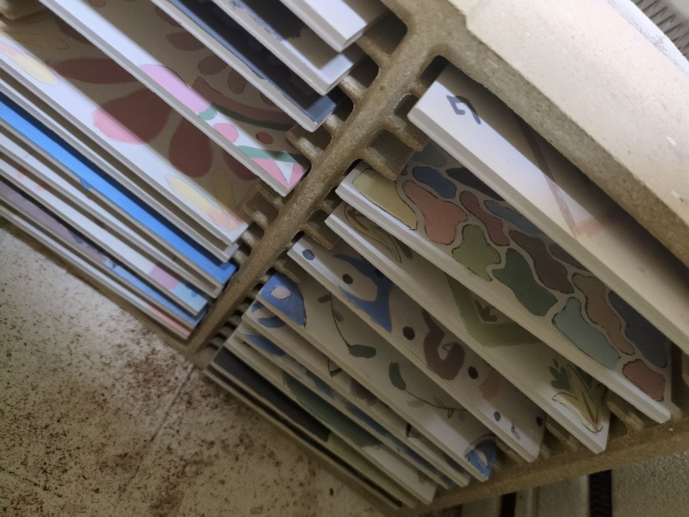
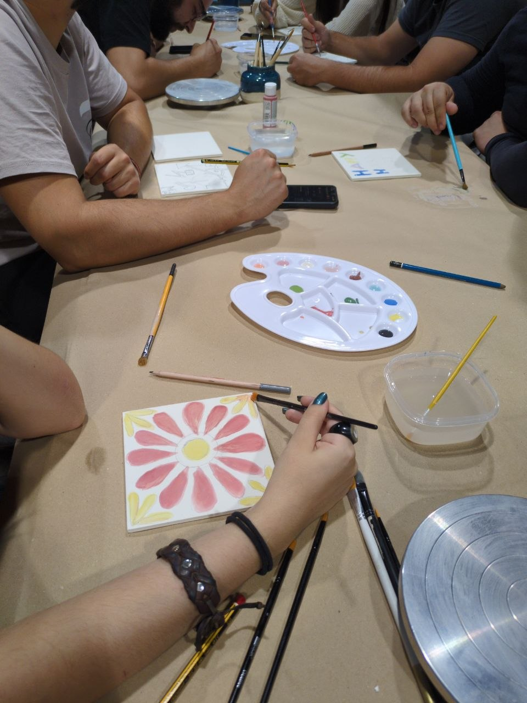
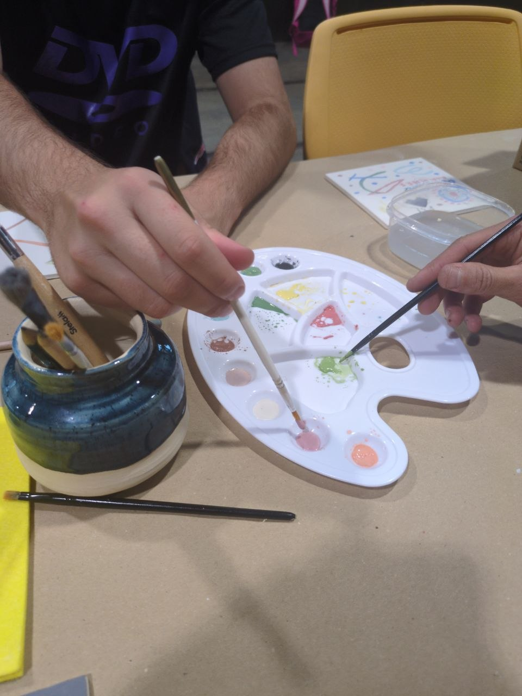

Tierra colectiva
Un cadáver exquisito en baldosas de barro, creado entre muchas manos. Esto es lo que estás viendo en la exposición.
Ver el procesoQué es Tierra colectiva
Tierra colectiva fue un taller de cerámica dentro de CUL 26 para fomentar el ocio y la creatividad entre jóvenes. Cualquiera podía venir a crear un mural colectivo en baldosas de barro, sin experiencia previa.
El mural funciona como un cadáver exquisito: un juego creativo en el que cada persona aporta su parte sin conocer el resultado final. Cada participante pintó su baldosa, y al juntarlas todas apareció una imagen que nadie había planeado entera.

Del barro al mural
Así se hace una baldosa de cerámica, paso a paso.
Baldosas de bizcocho
Partimos de azulejos que ya habían pasado por una primera cocción, el bizcocho. Están firmes, pero siguen siendo porosos y absorben bien el color.
El dibujo
Cada persona trazó su diseño a lápiz sobre la baldosa y pintó libremente, como en un cadáver exquisito, sin ver el conjunto.
El color
Pintamos con pinceles y esponjas. Antes de cocer, los colores se ven apagados y mates: el resultado real llega después del horno.
La segunda cocción
Las baldosas se hornean a más de mil grados. A esa temperatura los esmaltes se funden y se fijan al barro, y los colores se vuelven intensos y brillantes.
El proceso, en fotos
Imágenes del taller.




La colectividad
Lo más importante no es ninguna baldosa por separado, sino lo que ocurre al juntarlas. Cada cuadrado conserva la huella de quien lo pintó, con sus trazos, sus dudas y sus decisiones. De cerca ves a cada persona. De lejos, ves una sola imagen compartida y llena de sorpresas.
El taller
¿Te gustaría hacer cerámica?
Pronto abrimos taller en Calle Luis Carmona, 13, León, con cursos mensuales de modelado. Déjanos tus datos y te avisamos.
Quiero que me avisen